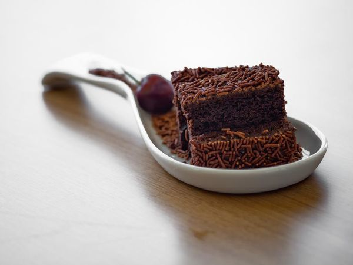

Bolos e Tortas
Torta de Limão:
Ingredientes:
- 4 limões brancos.
- 5 caixas de creme de leite sem soro.
- 4 caixas de leite condensado.
- 3 claras de ovos.
- 5 colheres de açúcar.
- 1 pacote de biscoito de maizena.
- 5 colheres de margarina.
- raspas de limão.
Modo de Preparo:
- Primeiro triture o biscoito, depois misture a margarina até que forme uma massa lisa e homogênea.
- Coloque para assar por 8 minutos, ou até que fique dourada.
- Deixe esfriar.
- Em uma outra tigela, misture 1 caixa de creme de leite e 1/2 de leite condensado.
- Depois bem devagar acrescente o suco dos 4 limões mexendo com a colher, bem devagar Ele vai dar uma reação e engrossar.
- Está pronto.
- Despeje sobre a a massa de biscoito, de preferência que ela já esteja na forma própria para tortas.
- Depois bata as 3 claras em neve e adicione o açúcar e misture com a colher, depois adicione o creme de leite e continue mexendo devagar com a colher.
- Despeje por cima do creme da torta e cubra com as raspas de limão.
- Leve ao congelador e espere por 2 horas e estará pronta a sua torta.
- Sirva bem gelada.
Bolo de Chocolate Molhadinho:

Ingredientes:
- 2 xícaras de farinha de trigo.
- 4 xícaras de açúcar.
- 1 xícara de leite.
- 9 colheres(sopa) de chocolate em pó.
- 1 colher(sopa) de fermento em pó.
- 6 ovos.
Modo de Preparo:
Massa:
- Em uma batedeira, bata as claras em neve, acrescente as gemas, o açúcar e bata novamente.
- Adicione a farinha, o chocolate em pó, o fermento, o leite e bata por mais alguns minutos.
- Despeje a massa em uma forma untada e leve para assar em forno médio (180° C), preaquecido, por 40 minutos.
Cobertura:
- Em uma panela, leve a fogo médio o chocolate em pó, a margarina, o açúcar e o leite, deixe até ferver.
- Despeje quente sobre o bolo já assado.
- É só saborear e apreciar.